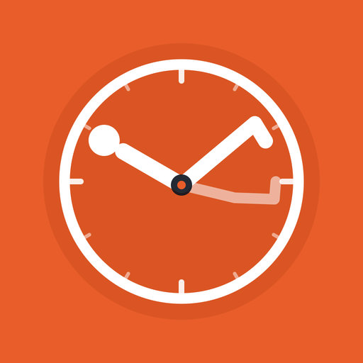
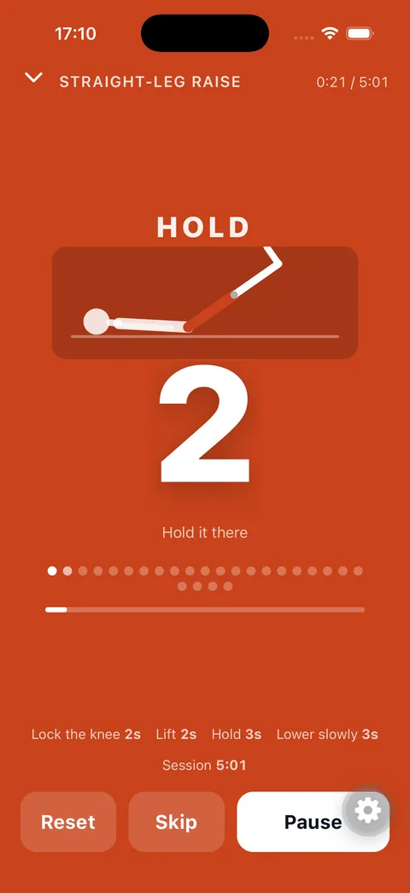
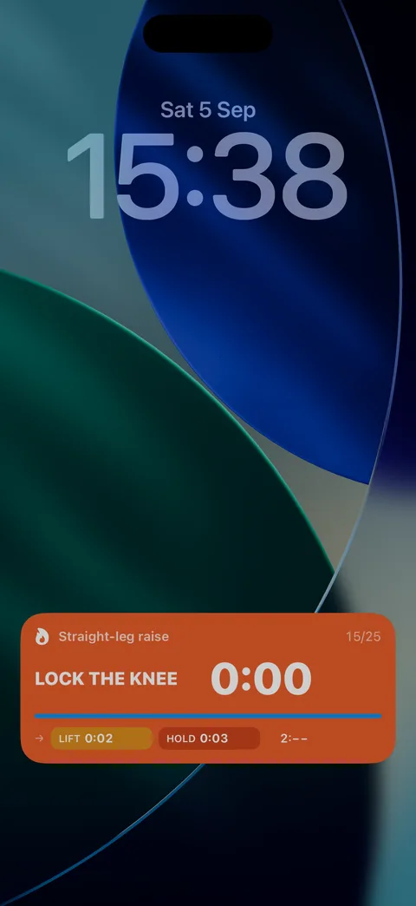
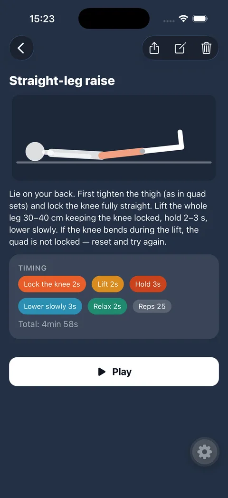
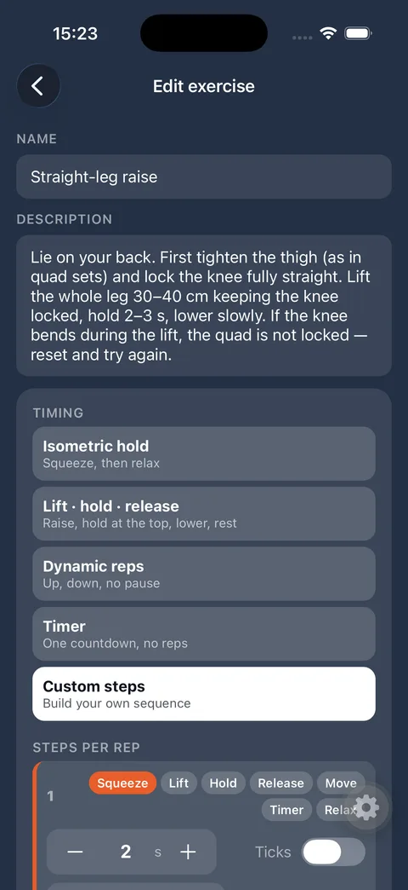
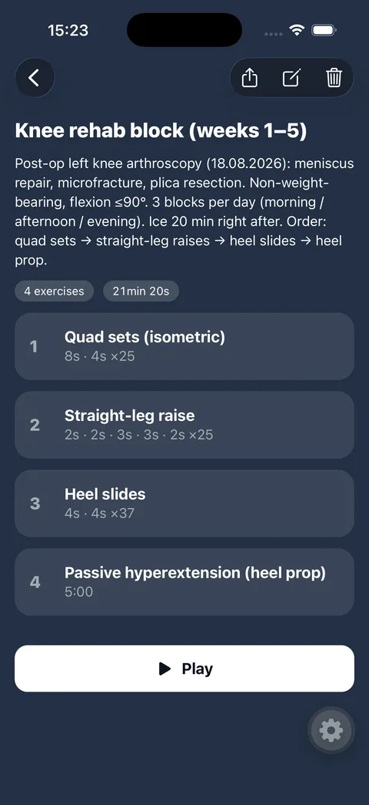
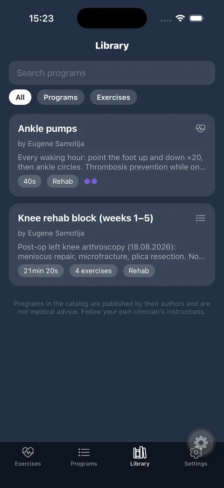
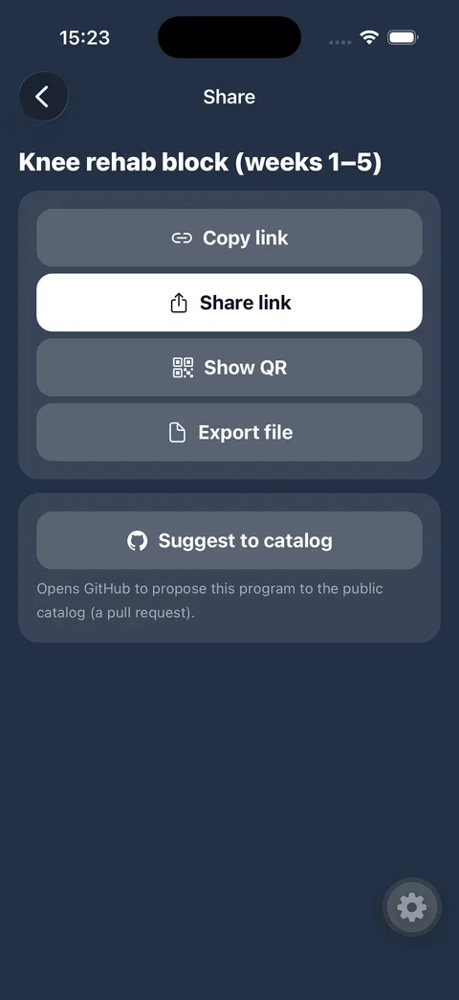
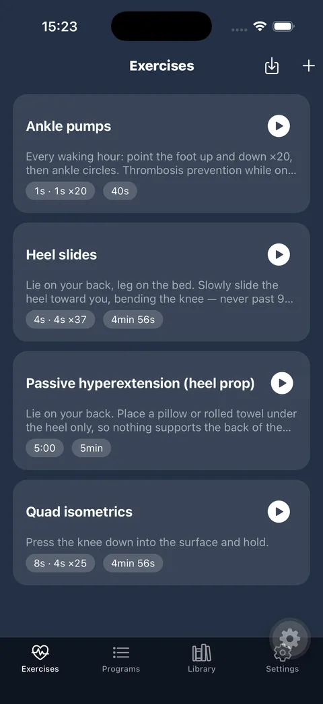

Your physio timer that keeps counting when the screen is locked.
Isometric holds, lift–hold–release reps, slides, plain countdowns. Distinct sounds for every step, programs of exercises, a public catalog from clinics and physiotherapists — and a lock-screen widget so you never have to tap the phone mid-exercise.
Get the appTry it in the browserBrowse the catalogSQUEEZE RELAX
Every step of a rep has its own colour and sound: squeeze, lift, hold, release, move, rest. Ticks on the last three seconds.
Runs while locked
Audio cues continue with the screen off. iOS Live Activity and Android notification show the current step and countdown.
Programs
Combine exercises into a block with rests between them. Share by link, QR or file — or publish to the public catalog.
Video and animations
Attach a YouTube link, a video from your gallery, a Lottie animation, or use the built-in schematic figures that move in time with the timer.
Private by design
Everything stays on your phone. No account, no tracking. The only network request fetches this public catalog.
English · Русский · Română
Fully localised, including sounds and lock-screen labels.
Make your own in minutes
Kinetempo is not a fixed set of workouts — it is a timer you shape.
Build it in the app
New exercise → pick a preset (isometric hold, lift · hold · release, dynamic reps, plain timer) or lay out your own steps: type, seconds, ticks, label. Add a description, a video link or a schematic animation, set reps and sets — done. Combine exercises into a program with rests between them.
Or let an assistant do it
There is a ready-made skill for Claude / Codex: paste the clinic's instruction sheet or describe the exercise, and it produces a complete Kinetempo program — steps, reps, description, matching animation — validated and ready to import or to submit to the catalog. A couple of minutes from paper to timer.
Share and publish
Send a program by link, QR or file; a physiotherapist can hand it to a patient in one tap. Programs merged into the public catalog appear in everyone's Library.
Screens
Straight from the app.








Try it in your browser
The player, re-implemented for the web: same steps, same sounds, same schematic figure. No install needed.
Open the demoDownload
App Store and Google Play links appear here once the app is published. Until then, testers can request a TestFlight invite at es@defency.net.